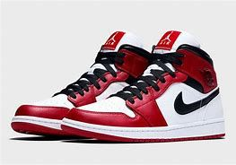

Air Jordan 1「Royal Blue」

Air Jordan 徹底改變鞋款遊戲規則。這款王者版本奠基於傳奇歷史，混搭高級皇家藍麂皮與濃黑色皮革。鞋舌和內底的經典 Nike Air 品牌標誌，與高筒襯墊鞋領的 Wings 標誌相得益彰。星光加持的特色外底選用皇家藍配色，讓你每一步都帶領著王朝向前邁進。
Purchase link|  |
在 Michael Jordan 1986 初出茅廬的青澀賽季時，便曾在季後賽首輪對陣 Boston Celtics 的 Game 2 上豪砍 63 分，賽後更博得當時如日中天的 Larry Bird 稱讚其為「穿著 23 號球衣打球的上帝」，這便是經典的「上帝說」由來，而該場比賽 Jordan 著用的即是 Air Jordan 1「Chicago」，這段故事自然也讓這雙球鞋添上幾分傳奇色彩。 Purchase link |
|
Air Jordan 徹底改變鞋款遊戲規則。這款王者版本奠基於傳奇歷史，混搭高級皇家藍麂皮與濃黑色皮革。鞋舌和內底的經典 Nike Air 品牌標誌，與高筒襯墊鞋領的 Wings 標誌相得益彰。星光加持的特色外底選用皇家藍配色，讓你每一步都帶領著王朝向前邁進。 Purchase link |